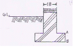
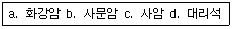
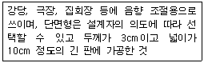
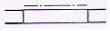
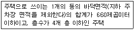

전산응용건축제도기능사 (2008-07-13 기출문제)
1과목: 건축구조
1. 강구조에 대한 다음 설명 중 옳지 않은 것은?
- 고층건물이나 장스팬구조에 적합하다.
- 내화성이 우수하여 별도의 조치가 필요 없다.
- 부재가 세장하므로 좌굴의 위험성이 높다.
- 소성변형 능력이 크다.
(정답률: 58%)

2. 다음 그림의 조적조에서 콘크리트 기초판(footing)의 두께(AB)로 가장 알맞은 것은?

- 200㎜
- 150㎜
- 100㎜
- 50㎜
(정답률: 56%)
3. 수직 및 수평철근을 벽면에 평행하게 양면으로 배치하여야 하는 철근콘크리트 벽체의 최소 두께는?
- 150㎜
- 200㎜
- 250㎜
- 300㎜
(정답률: 39%)
4. 석구조에서 창문 증의 개구부 위에 걸쳐대어 상부에서 오는 하중을 받는 수평부재는?
- 창대돌
- 문지방돌
- 쌤돌
- 인방돌
(정답률: 77%)
5. 조적식 구조에 대한 설명 중 옳지 않은 것은?
- 조적식 구조인 각층의 벽은 편심하중이 작용하도록 설계하여야 한다.
- 조적식 구조인 내력벽의 길이는 10m를 넘을 수 없다.
- 조적식 구조인 내력벽으로 둘러쌓인 부분의 바닥면적은 80m2을 넘을 수 없다.
- 조적식 구조인 내력벽의 두께는 바로 위층의 내력벽 두께 이상이어야 한다.
(정답률: 33%)
6. 다음 중 보강블록조 내력벽에서 벽량의 최솟값은?
- 10cm/㎡
- 13cm/㎡
- 15cm/㎡
- 18cm/㎡
(정답률: 78%)
7. 건축구조에서 중간에 기둥을 두지 않고, 직사각형의 면적에 지붕을 씌우는 형식으로 교량 시스템을 응용한 것은?
- 절판 구조
- 공기막 구조
- 셸 구조
- 현수 구조
(정답률: 36%)
8. 다음 중 목구조에서 토대와 기둥의 맞춤으로 가장 알맞은 것은?
- 짧은 장부 맞춤
- 빗턱 맞춤
- 턱솔 맞춤
- 걸침턱 맞춤
(정답률: 63%)
9. 다음 중 목재 왕대공 지붕틀에서 사용되는 부재와 연결철물의 연결이 옳지 않은 것은?
- ㅅ자보와 평보 : 안장쇠
- 달대공과 평보 : 볼트
- 빗대공과 왕대공 : 꺽쇠
- 대공 밑잡이와 왕대공 : 볼트
(정답률: 41%)
10. 말뚝기초에서 말뚝머리지름이 300㎜인 기성콘크리트 말뚝을 타설할 때 말뚝 중심 간의 최소 간격은?
- 300㎜
- 450㎜
- 750㎜
- 900㎜
(정답률: 44%)
11. 철근콘크리트구조에서 보의 춤은 간사이의 얼마 정도로 하는가?
- 1/6 ~ 1/7
- 1/8 ~ 1/10
- 1/10 ~ 1/15
- 1/15 ~ 1/18
(정답률: 55%)
12. 강구조 트러스에 대한 설명 중 옳지 않은 것은?
- 접합 시의 거싯플레이트는 직사각형에 가까운 모양이 좋다.
- 지점의 중심선과 트러스결정이 중심선은 가능한 일치시켜 편심모멘트가 생기지 않도록 한다.
- 현재란 수직으로 배치된 목재를 말한다.
- 지점은 지지점이라고도 하며 트러스가 놓이는 점을 말한다.
(정답률: 51%)
13. 강구조의 기둥 종류 중 앵글, 채널 증으로 대판을 플랜지에 직각으로 접합한 것은?
- H형강기둥
- 래티스기둥
- 격자기둥
- 경관기둥
(정답률: 52%)
14. 한식공사에서 중도리를 얹는 것을 의미하는 것은?
- 열초
- 치목
- 상량
- 입주
(정답률: 52%)
15. 부재에 하중이 작용하면 각 부재의 내부에는 외력에 저항하는 힘인 응력이 생기는데, 다음 중 부재를 직각으로 자를 때 생기는 것은?
- 인장응력
- 압축응력
- 전단응력
- 휨모멘트.
(정답률: 66%)
16. 철근콘크리트구조에 사용되는 철근에 관한 설명 중 틀린 것은?
- 인장력이 약한 부분에 철근을 배근한다.
- 철근의 합산한 총 단면적이 같을 가는 철근을 사용하는 것이 부착에 좋다.
- 철근과 콘크리트의 부착강도는 콘크리트의 강도만이 중요하게 작용한다.
- 철근의 이음은 인장력이 작은 곳에서 한다.
(정답률: 73%)
17. 다음 중 철근콘크리트구조에서 거푸집이 갖추어야 할 조건과 가장 거리가 먼 것은?
- 콘크리트를 부어 넣었을 때 변형되거나 파괴되지 않을 것
- 반복 사용할 수 없을 것
- 운반과 가공이 쉬울 것
- 모르타르나 시멘트풀이 누출되지 않을 것
(정답률: 80%)
18. 다음 중 건축구조의 재료에 따른 분류에 속하지 않은 것은?
- 목구조
- 돌구조
- 아치구조
- 강구조
(정답률: 75%)
19. 다음 중 막구조의 대표적인 구조물은?
- 금문교
- 장충체육관
- 시드니 오페라 하우스
- 상암동 월드컵 경기장
(정답률: 78%)
20. 다음 중 합성골조에 대한 설명으로 적합하지 않은 것은?
- CFT(콘크리트충전강관기둥)에서는 내부 콘크리트가 강관의 급격한 국부좌굴을 방지한다.
- 코어(Core)의 전단벽에 횡력에 대한 강성을 증대시키기 위하여 철골빔을 설치한다.
- 데크플레이트(Deck Plate)는 합성슬래브의 한 종류이다.
- 스터드볼트(Stud Bolt)는 철골기둥을 연결하는 데 사용한다.
(정답률: 36%)
2과목: 건축재료
21. 콘크리트 구조물에서 하중을 지속적으로 작용시켜 놓을 경우 하중의 증가가 없음에도 불구하고 지속하중에 의해 시간과 더불어 변형이 증대되는 현상은?
- 영계수
- 점성
- 탄성
- 크리프
(정답률: 71%)
22. 19세기 중엽 철근콘크리트의 실용적인 사용법을 개발한 사람은?
- 모니에(Monnier)
- 케이프스(Cheops)
- 애습딘(Aspdin)
- 안토니오(Antonio)
(정답률: 65%)
23. 점토에 대한 다음 설명 중 옳지 않은 것은?
- 제품의 색깔과 관계있는 것은 규산성분이다.
- 점토의 주성분은 실리카. 알루미나이다.
- 각종 암석이 풍화, 분해되어 만들어진 가는입자로 이루어져 있다.
- 점토를 구성하고 있는 점토광물은 잔류점토와 침적점토로 구분된다.
(정답률: 51%)
24. 다음 중 표준형 내화 벽돌의 규격 치수는?(단위:mm)
- 190x90x57
- 210x100x60
- 210x100x57
- 230x114x65
(정답률: 26%)
25. 각종 유리 제품의 용도 및 특징에 관한 기술 중 옳은 것은?
- 프리즘 타일 : 입사광선을 확산 또는 집중시킬 목적으로 지하실 또는 옥상 채광용으로 사용
- 폼글라스 : 보온 및 방음성이 좋고, 음향조절에 이용, 투과율 90%
- 유리섬유 : 전기절연성이 작고 특히 인장강도가 적음
- 유리블록 : 장식 및 보온 방음벽에 이용, 투과률이 전혀 없음
(정답률: 63%)
26. 무색이고 방부력이 가장 우수하며 석유등의 용제를 녹여 쓰는 목재 방부제는?
- 콜타르
- 크레오소트유
- P.C.P
- 플로화나트륨
(정답률: 47%)
27. 석고보드에 대한 다음 설명 중 옳지 않은 것은?
- 부식이 안 되고 충해를 받지 않는다.
- 팽창 및 수축의 변형이 크다.
- 흡수로 인해 강도가 현저하게 저하된다.
- 단열성이 높다.
(정답률: 55%)
28. 다음 구조 재료에 요구되는 성질과 가장 관계가 먼 것은?
- 재질이 균일하여야 한다.
- 강도가 큰 것이어야 한다.
- 탄력성이 있고 자중이 커야 한다.
- 가공이 용이한 것이어야 한다.
(정답률: 74%)
29. 다음 중 석유계 아스팔트가 아닌 천연 아스팔트에 해당하는 것은?
- 레이크 아스팔트
- 스트레이트 아스팔트
- 블론 아스팔트
- 용제추출 아스팔트
(정답률: 45%)
30. 돌로마이트 석회에 관한 다음 설명 중 옳지 않은 것은?
- 회반죽에 비해 조기강도 및 최종강도가 크다.
- 소석회에 비해 점성이 높고 작업성이 좋다.
- 점성이 거의 없어 해초풀로 반죽한다.
- 수축 균열이 많이 발생한다.
(정답률: 58%)
31. 비철금속 중 구리에 대한 설명으로 옳지 않은 것은?
- 알칼리성에 대해 강하므로 콘크리트 등에 접하는 곳에 사용이 용이하다.
- 건조한 공기 중에서는 산화하지 않으나, 습기가 있거나 탄산가스가 있으면 녹이 발생한다.
- 연성이 뛰어나고 가공성이 풍부하다.
- 건축용으로 박판으로 제작하여 지붕 재료로 이용된다.
(정답률: 55%)
32. 다음 중 비닐바닥 타일에 대한 설명으로 틀린 것은?
- 일반 사무실이나 점포 등에 바닥에 널리 사용된다.
- 염화비닐수지에 석면, 탄산칼슘 등의 충전제를 배합해서 성형된다.
- 반경질비닐타일, 연질비닐타일 퓨어비닐타일 등이 있다.
- 의장성, 내마모성은 양호하나 경제성, 시공성은 떨어진다.
(정답률: 63%)
33. 평균적으로 압축강도가 가장 큰 석재부터 순서대로 나열된 것은?

- a-d-b-c
- a-b-c-d
- a-c-d-b
- d-c-b-a
(정답률: 52%)
34. 베니어가 널결만이어서 표면이 거친 결점이 있으나, 넓은 베니어를 얻기 쉽고 원목의 낭비가 적어 많이 사용되는 베니어 제조법은?
- 소드 베니어
- 반소드 베니어
- 슬라이스트 베니어
- 로터리 베니어
(정답률: 59%)
35. 미리 거푸집 속에 적당한 입도배열을 가진 굵은 골재를 채워 넣은 후, 모르타르를 펌프로 압입하여 굵은 골재의 공극을 충전시켜 만든 콘크리트는?
- 소일 콘크리트
- 레디믹스트 콘크리트
- 쇄석 콘크리트
- 프리팩트 콘크리트
(정답률: 55%)
36. 다음 중 보통 무근콘크리트의 단위 중량은?
- 1.5t/㎥
- 1.8t/㎥
- 2.3t/㎥
- 2.8t/㎥
(정답률: 46%)
37. 보통 포틀랜드시멘트보다 C3S나 석고가 많고 분말도가 높아 조기에 강고발휘가 높은 시멘트는?
- 고로 시멘트
- 백색 포틀랜드시멘트
- 중용열 포틀랜드시멘트
- 조강 포틀랜드시멘트
(정답률: 61%)
38. 보통 포틀랜드시멘트의 응결시간에 대한 설명 중 옳은 것은?
- 초결 30분 이상, 종결 10시간 이하
- 초결 30분 이상, 종결 20시간 이하
- 초결 60분 이상, 종결 20시간 이하
- 초결 60분 이상, 종결 10시간 이하
(정답률: 55%)
39. 다음 중 혼화제인 AE제에 대한 설명으로 옳은 것은?
- 사용 수량을 줄여 블리딩(Bleeding)이 감소한다.
- 화학작용에 대한 저항성을 저감시킨다.
- 탄성을 가진 기포의 동결융해 및 건습 등에 의한 용적 변화가 크다.
- 철근의 부착강도를 증가시킨다.
(정답률: 41%)
40. 다음에서 설명하는 목재의 제품은?

- 합판
- 집성재
- 플로어링 보드
- 코펜하겐 리브
(정답률: 73%)
3과목: 건축계획 및 제도
41. 다음 중 평면표시기호가 의미하는 것은?

- 미닫이창
- 셔터 달린 창
- 이중창
- 망사창
(정답률: 65%)
42. 철근 도면에서 늑근이나 띠철근을 표현하는 선은?
- 파선
- 가는실선
- 일점쇄선
- 굵은실선
(정답률: 71%)
43. 문서 등의 철을 위하여 도면을 접을 때 접는 크기는 얼마의 원칙으로 하는가?
- A2
- A3
- A4
- A6
(정답률: 84%)
44. 묘사 용구 중 지울 수 있는 장점 대신 번질 우려가 있는 단점을 지닌 재료는?
- 잉크
- 연필
- 매직
- 물감
(정답률: 87%)
45. 다음 중 도면 작도 시 유의사항으로 옳지 않은 것은?
- 축척과 도면의 크기에 관계없이 글자의 크기는 같아야 한다.
- 용도에 따라서 선의 굵기를 구분하여 사용한다.
- 숫자는 아라비아 숫자를 원칙으로 한다.
- 글자체는 수직 또는 15° 경사의 고딕체로 쓰는 것을 원칙으로 한다.
(정답률: 78%)
46. 건축물의 묘사 및 표현에 관한 설명 중 옳지 않은 것은?
- 음영은 건축물의 입체적인 표현을 강조하기 위해 그려 넣는 것으로 실시 설계도나 시공도에 주로 사용된다.
- 건축 도면에 사람이나 그림을 그려 넣는 목적은 스케일감을 나타내기 위해서이다.
- 건축 도면에서 수목의 배치와 표현을 통해 건물 주변 대지의 성격을 나타낼 수 있다.
- 여러 선에 의한 건축물의 표현방법은 선의 간격을 달리함으로써 면과 입체를 결정한다.
(정답률: 62%)
47. 다음 중에서 시기적으로 가장 먼저 이뤄지는 도면은?
- 기본 설계도
- 실시 설계도
- 계획 설계도
- 시공 계획도
(정답률: 74%)
48. 다음 색채 계획 중 가장 부적당한 것은?
- 교실의 벽 : 담록색
- 수영풀 수조 내부 : 녹색
- 암실 : 흑색
- 병원의 수술실 : 백색
(정답률: 50%)
49. 다음의 건축공간에 대한 설명 중 옳지 않은 것은?
- 공간을 편리하게 이용하기 위해서는 실의 크기와 모양, 높이 증이 적당해야 한다.
- 내부공간은 일반적으로 벽과 지붕으로 둘러싸인 건물 안쪽의 공간을 말한다.
- 인간은 건축공간을 조형적으로 인식한다.
- 외부공간은 자연 발생적인 것으로 인간에 의해 의도적으로 만들어지지 않는다.
(정답률: 82%)
50. 한식주택과 양식주택에 대한 설명 중 옳지 않은 것은?
- 한식주택의 각 실들은 다용도 형식으로 되어있어 융통성이 많다.
- 양식주택은 개인의 생활공간이 보호되는 유리한 점이 있는 만큼 많은 주거 면적이 소요된다.
- 양식주택의 가구는 부차적 존재이며, 한식 주택의 가구는 주요한 내용물이다.
- 한식주택은 좌식생활이며, 양식주택은 입식생활이다.
(정답률: 74%)
51. 건축 설계 시 가장 먼저 생각해야 할 사항은?
- 건물 외관
- 구조 계획
- 시공 계획
- 대지 및 주의 환경 분석
(정답률: 84%)
52. 부엌용 개수기류에 사용하는 경우가 많으며, 관트랩에 비하여 봉수의 파괴가 적은 트랩은?
- S트랩
- P트랩
- 드럼 트랩
- 벨 트랩
(정답률: 55%)
53. 주택 식사실의 종류 중 부엌의 일부분에 식사실을 두는 형태로, 부엌과 식사실을 유기적으로 연결시켜 노동력을 절감하기 위한 형태는?
- 리빙 키친
- 리빙 다이닝
- 다이닝 키친
- 다이닝 포치
(정답률: 83%)
54. 근린주구의 중심이 되는 시설은?
- 초등학교
- 중학교
- 고등학교
- 대학교
(정답률: 84%)
55. 증기, 가수, 전기, 석탄 등을 열원으로 하는 물의 가열 장치를 설치하여 온수를 만들어 공급하는 설비는?
- 급수설비
- 공기조화설비
- 방재설비
- 급탕설비
(정답률: 79%)
56. 다음의 건축법상 정의에 해당되는 주택의 종류는?

- 아파트
- 연립주택
- 기숙사
- 다세대주택
(정답률: 47%)
57. 지역난방(District Heating)에 대한 설명으로 옳지 않은 것은?
- 각 건물에서는 위험물을 취급하지 않으므로 화재위험이 적다.
- 각 건물마다 보일러 시설을 할 필요가 없다.
- 설비의 고도화에 따라 도시의 매연을 경감시킬 수 있다.
- 각 건물의 설비 면적이 증가된다.
(정답률: 61%)
58. 다음 중 열환경의 4요소(온열 요소)에 속하지 않는 것은?
- 공기중의 습도
- 공기 중의 산소의 함량
- 공기의 온도
- 주의 벽의 복사열
(정답률: 59%)
59. 소방대 전용 소화전인 송수구를 통하여 실내로 물을 공급하여 소화활동을 하는 것으로, 지하층의 일반하재진압을 위한 소방시설은?
- 연결살수 설비
- 스프링클러 설비
- 트렌처 설비
- 옥외 소화전 설비
(정답률: 62%)
60. 수송설비의 종류 중 계단식으로 된 컨베이어로서 30° 이하의 기울기를 가지는 발판을 부착시켜 레일로 지지한 것은?
- 엘리베이터
- 에스컬레이터
- 이동 보도
- 버킷 컨베이어
(정답률: 86%)